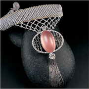
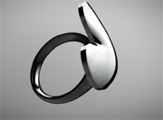

This is from one of the non-famous designer in Hongkong. It's a
niche design, but give me a lot of inspiration. His work is simple but the shape always can see a
lot of Chinese element include in it.

3D JEWELRY DESIGN
export in color
3D printing is very helpful for build models, and it's a good start to see the
design works or not

Chinese materials jewelry display
color contrast
How to make the color more prominent and make the work look very unique is also one
of the important steps of jewelry design.